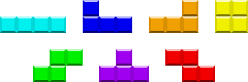

Crea el tetris en construct 2
por kiko vidal
Tetris (en ruso, Те́трис) es un videojuego de puzzle originalmente diseñado y programado por Alekséi Pázhitnov en la Unión Soviética. Fue lanzado el 6 de junio de 1984, mientras trabajaba para el Centro de Computación Dorodnitsyn de la Academia de Ciencias de la Unión Soviética en Moscú, RSFS de Rusia. Su nombre deriva del prefijo numérico griego tetra- (todas las piezas del juego, conocidas como Tetrominós que contienen cuatro segmentos) y del tenis, el deporte favorito de Pázhitnov.
En el Tetris se juega con los tetrominós, el caso especial de cuatro elementos de poliominós. Los poliominós se han utilizado en los rompecabezas populares por lo menos desde 1907, y el nombre fue dado por el matemático Solomon W. Golomb en 1953. Sin embargo, incluso la enumeración de los pentominós data de la antigüedad.
El juego (o una de sus muchas variantes) está disponible para casi cada consola de videojuegos y sistemas operativos de PC, así como en dispositivos tales como las calculadoras gráficas, teléfonos móviles, reproductores de multimedia portátiles, PDAs, reproductores de música en red e incluso como huevo de pascua en productos no mediáticos como los osciloscopios. También ha inspirado servicios de mesa y ha sido jugado en los costados de varios edificios, manteniendo el récord de ser el juego completamente funcional más grande del mundo gracias al esfuerzo de estudiantes holandeses en 1995 que iluminaron 15 pisos del Departamento de Ingeniería Eléctrica en la Universidad Técnica de Delft.
Mientras que las versiones de Tetris se vendieron para una amplia gama de plataformas de ordenadores domésticos de los años 1980, fue la muy exitosa versión portátil para la Game Boy lanzada en 1989 que estableció al juego como uno de los más populares de todos los tiempos. La edición número 100 del Electronic Gaming Monthly tuvo al Tetris en el primer lugar como el "mejor juego de todos los tiempos". En 2007, Tetris ocupó el segundo lugar en los "100 mejores videojuegos de todos los tiempos" para IGN.13 Ha vendido más de 170 millones de copias para el año 2016.14 En enero de 2010, se anunció que el Tetris ha vendido más de 100 millones de unidades para teléfonos celulares (móviles) sólo desde el año 2005.
Historia
Alekséi Pázhitnov (Sokolov) se había inspirado en un juego de pentaminós que había comprado anteriormente. El nombre "tetris" deriva del étimo griego "tetra", que significa "cuatro", y hace referencia a la cantidad de cuadros que componen las piezas. Alekséi Pázhitnov programó una versión de su juego en un Electrónika 60, según la leyenda en una sola tarde. Hay que tener en cuenta que lo realmente complejo fue llegar a la idea original del juego y no la programación en sí misma. Hoy por hoy la mecánica del juego es muy conocida y es sencillo emularla.

Tetris comienza a ganar popularidad cuando Vadim Gerasimov, un joven de 16 años que trabajaba en la Academia, portó el juego a IBM PC. Desde ahí se distribuye gratuitamente a Hungría, donde es programado para Apple II y Commodore 64 por programadores húngaros. Estas versiones llaman la atención de Robert Stein, que intenta adquirir los derechos del juego. Antes de conseguir estos derechos, vende el concepto robado a la empresa inglesa Mirrorsoft y a su filial estadounidense: Spectrum Holobyte, que editan una versión para Atari ST y Sinclair ZX Spectrum. Tetris se comercializa en Europa y Estados Unidos en 1987 con la mención: «Fabricado en Estados Unidos, creado en el extranjero».
Tetris ha sido históricamente uno de los videojuegos más versionados y es, junto a las Torres de Hanói, el predilecto por los programadores noveles de juegos. Lucharon por robarse la idea y licenciarla Atari y Nintendo, lográndolo finalmente este último gracias a Henk Rogers. Fue el juego que acompañaría a su novedosa consola portátil Game Boy en su debut, lo que popularizó tanto Tetris como la consola por todo el mundo.
En 1991, Alekséi Pázhitnov emigra a Estados Unidos y, cinco años después, en 1996 funda su propia compañía, Tetris Company, junto con Henk Rogers y se apropia de los derechos de autor.
Después del éxito de este juego, muchos otros trataron de imitarlo. Juegos como Columns o Collapse son ejemplos que han intentado seguir la estela que dejó Tetris, un juego que inauguró un género dentro del panorama arcade. Atari, por su parte, como contraataque por perder la licencia de este videojuego, sacó al mercado Klax, un juego de habilidad e inteligencia con una temática similar al Columns o Puyo Puyo.
Existe una versión gratuita muy popular en Internet denominada TetriNET, que proporciona una versión multijugador en arquitectura cliente-servidor, en el que se pueden enfrentar a través de la red de 2 a 6 personas con la posibilidad de crear equipos. Fue creada en 1997 por St0rmCat y se encuentran en la actualidad clientes para los sistemas operativos Windows (el propio TetriNET y Blocktrix, entre otros), GNU/Linux (GTetrinet) y Mac OS X (Tetrinet Aqua). La singularidad de esta versión es que añade unos bonus especiales llamados en inglés cookies que permiten alterar el juego de los adversarios.